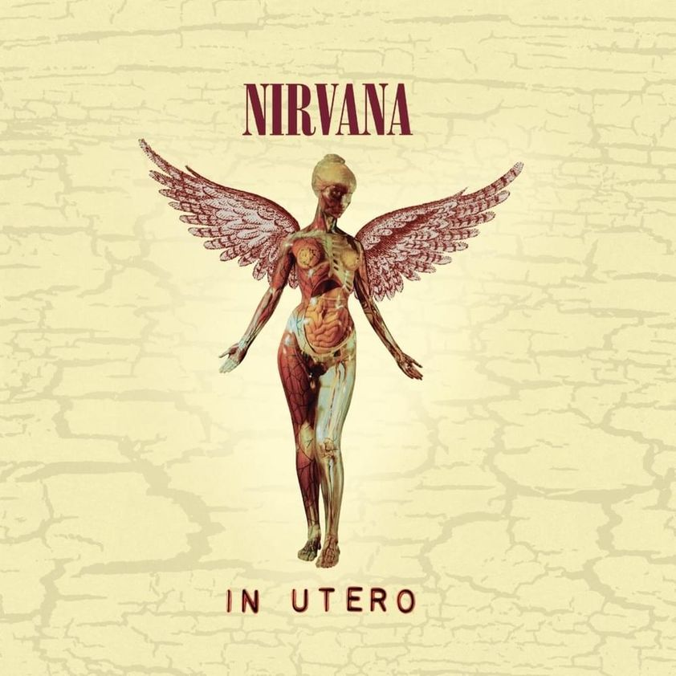

In Utero (Instrumental)
►
Serve The Servants
Scentless Apprentice
Heart-Shapped Box
R4p3 Me
Frances Farmer Will Have Her Revenge On Seattle
Dumb
Very Ape
Milk It
Pennyroyal Tea
Radio Friendly Unit Shifter
Tourettes's
All Apoligies